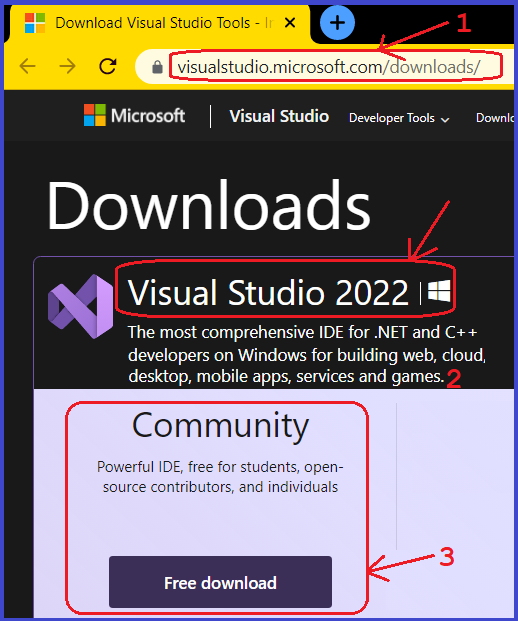
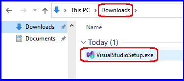
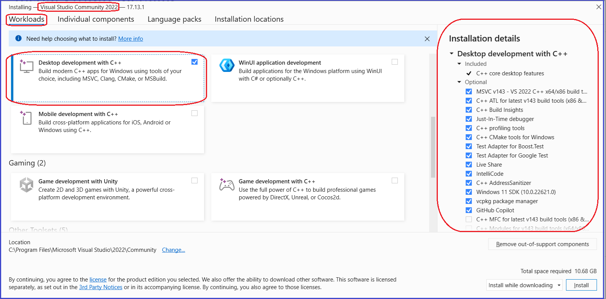
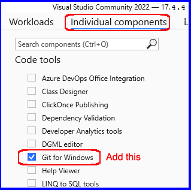
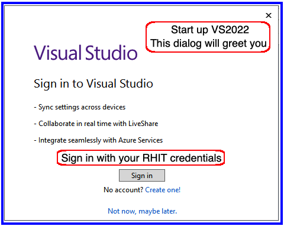

Install Microsoft Visual Studio Community 2022
- In CSSE373 this Quarter we'll be developing software in C++ using VS2022 as our IDE
- Other IDEs will also be used, but they will be available through the Internet
- Below are a number of screen shots that should help you with finding and installing VS2022
- My apologies MacBook users ... you can try the Mac version of Visual Studio, but it doesn't support C++, so end the end, you're going to need to use a PC
Steps 1 & 2 :
- Navigate to: visualstudio.microsoft.com/downloads
- Download the VS2022 Community Edition

Step 3:
- Find the download on your machine and double click the .exe that was downloaded

Step 4:
- In Workloads choose Desktop develoment with C++

Step 5:
- Switch to the Individual components tab
- Check the box for Git for Windows under Code Tools

Step 7:
- Click Install

Step 8:
- Find VS2022 on your machine and start it up
